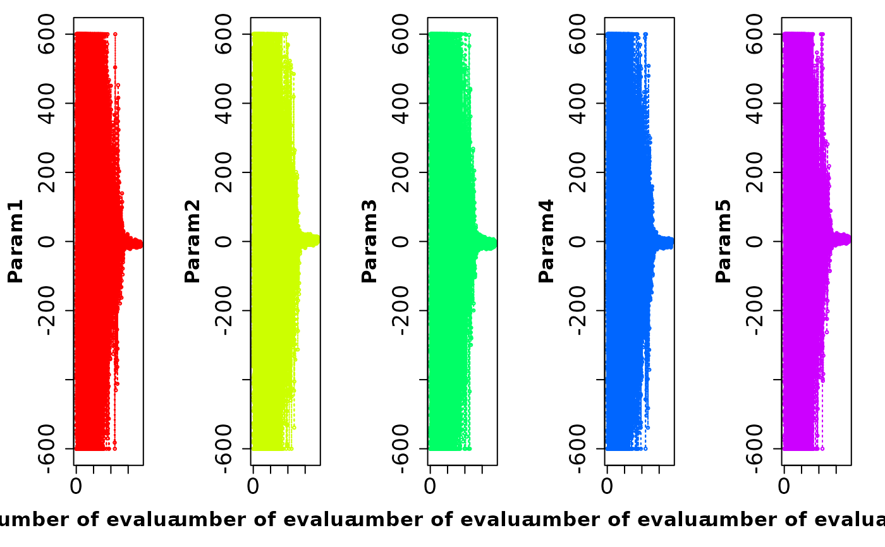

Plot parameter values against the iteration number
plot_ParamsPerIter.RdFunction to plot the value of each parameter against the iteration number
Usage
plot_ParamsPerIter(params,...)
# Default S3 method
plot_ParamsPerIter(params, param.names=colnames(params),
main=NULL, xlab="Number of evaluations", nrows="auto", cex=0.5,
cex.main=1.2,cex.axis=1.7,cex.lab=1.5, col=rainbow(ncol(params)),
lty=3, verbose=TRUE, ..., do.png=FALSE, png.width=1500,
png.height=900, png.res=90, png.fname="Params_ValuePerRun.png" )
# S3 method for class 'matrix'
plot_ParamsPerIter(params, param.names=colnames(params),
main=NULL, xlab="Number of evaluations", nrows="auto", cex=0.5,
cex.main=1.2,cex.axis=1.7,cex.lab=1.5, col=rainbow(ncol(params)),
lty=3, verbose=TRUE, ..., do.png=FALSE, png.width=1500,
png.height=900, png.res=90, png.fname="Params_ValuePerRun.png" )
# S3 method for class 'data.frame'
plot_ParamsPerIter(params, param.names=colnames(params),
main=NULL, xlab="Number of evaluations", nrows="auto", cex=0.5,
cex.main=1.2,cex.axis=1.7,cex.lab=1.5, col=rainbow(ncol(params)),
lty=3, verbose=TRUE, ..., do.png=FALSE, png.width=1500,
png.height=900, png.res=90, png.fname="Params_ValuePerRun.png" )Arguments
- params
matrix or data.frame with the parameter values, where each row represent a different parameter set, and each column represent the value of a different model's parameter
- param.names
character vector, names to be used for each model's parameter in
params(by default its column names)- main
character, title for the plot
- xlab
character, title for the x axis. See
plot- nrows
numeric, number of rows to be used in the plotting window. If
nrowsis set to auto, the number of rows is automatically computed depending on the number of columns ofparams- cex
numeric, magnification for text and symbols relative to the default. See
par- cex.main
numeric, magnification to be used for main titles relative to the current setting of
cex. Seepar- cex.axis
numeric, magnification to be used for axis annotation relative to the current setting of
cex. Seepar- cex.lab
numeric, magnification to be used for x and y labels relative to the current setting of
cex. Seepar- col
specification for the default plotting colour. See
par- lty
line type. See
par- verbose
logical, if TRUE, progress messages are printed
- ...
further arguments passed to the
plotfunction or from other methods.- do.png
logical, indicates if all the figures have to be saved into PNG files instead of the screen device
- png.width
OPTIONAL. Only used when
do.png=TRUE
numeric with the width of the device. Seepng- png.height
OPTIONAL. Only used when
do.png=TRUE
numeric with the height of the device. Seepng- png.res
OPTIONAL. Only used when
do.png=TRUE
numeric with the nominal resolution in ppi which will be recorded in the PNG file, if a positive integer of the device. Seepng- png.fname
OPTIONAL. Only used when
do.png=TRUE
character, with the filename used to store the PNG file
Value
A single figure with nparam number of panels (nparam=ncol(params)), where each panel has a plot the value of each parameter against the iteration number.
Author
Mauricio Zambrano-Bigiarini, mzb.devel@gmail.com
Examples
# Number of dimensions to be optimised
D <- 5
# Boundaries of the search space (Griewank test function)
lower <- rep(-600, D)
upper <- rep(600, D)
# \donttest{
local({
# Setting the user temporal directory as working directory
oldwd <- getwd()
on.exit(setwd(oldwd), add = TRUE)
setwd(tempdir())
# Setting the seed
set.seed(100)
# Running PSO with the 'griewank' test function, writing the results to text files
hydroPSO(fn=griewank, lower=lower, upper=upper,
control=list(use.IW = TRUE, IW.type= "linear", IW.w= c(1.0, 0.4),
write2disk=TRUE) )
# reading the 'Particles.txt' output file of PSO
particles <- read_particles(file="./PSO.out/Particles.txt", plot=FALSE)
# plotting the value of each parameter and the objective function against the
# iteration number
plot_ParamsPerIter(particles[["part.params"]])
}) # local END
#>
#> ================================================================================
#> [ Initialising ... ]
#> ================================================================================
#>
#> [npart=40 ; maxit=1000 ; method=spso2011 ; topology=random ; boundary.wall=absorbing2011]
#>
#> [ user-definitions in control: use.IW=TRUE ; IW.type=linear ; IW.w=c(1, 0.4) ; write2disk=TRUE ]
#>
#>
#> ================================================================================
#> [ Writing the 'PSO_logfile.txt' file ... ]
#> ================================================================================
#>
#> ================================================================================
#> [ Running PSO ... ]
#> ================================================================================
#>
#> iter: 100 Gbest: 1.633E+00 Gbest_rate: 0.00% Iter_best_fit: 9.843E+00 nSwarm_Radius: 2.67E-01 |g-mean(p)|/mean(p): 91.14%
#> iter: 200 Gbest: 1.570E+00 Gbest_rate: 0.00% Iter_best_fit: 2.190E+00 nSwarm_Radius: 1.50E-01 |g-mean(p)|/mean(p): 84.12%
#> iter: 300 Gbest: 2.070E-01 Gbest_rate: 0.00% Iter_best_fit: 8.145E-01 nSwarm_Radius: 1.18E-02 |g-mean(p)|/mean(p): 83.59%
#> iter: 400 Gbest: 8.513E-02 Gbest_rate: 0.53% Iter_best_fit: 8.513E-02 nSwarm_Radius: 2.10E-03 |g-mean(p)|/mean(p): 77.15%
#>
#> [ Writing output files... ]
#>
#> |
#> ================================================================================
#> [ Creating the R output ... ]
#> ================================================================================
#>
#> [ Reading the file 'Particles.txt' ... ]
#> [ Total number of parameter sets: 18640 ]
#>
#> [ Plotting ... ]

# } # donttest END